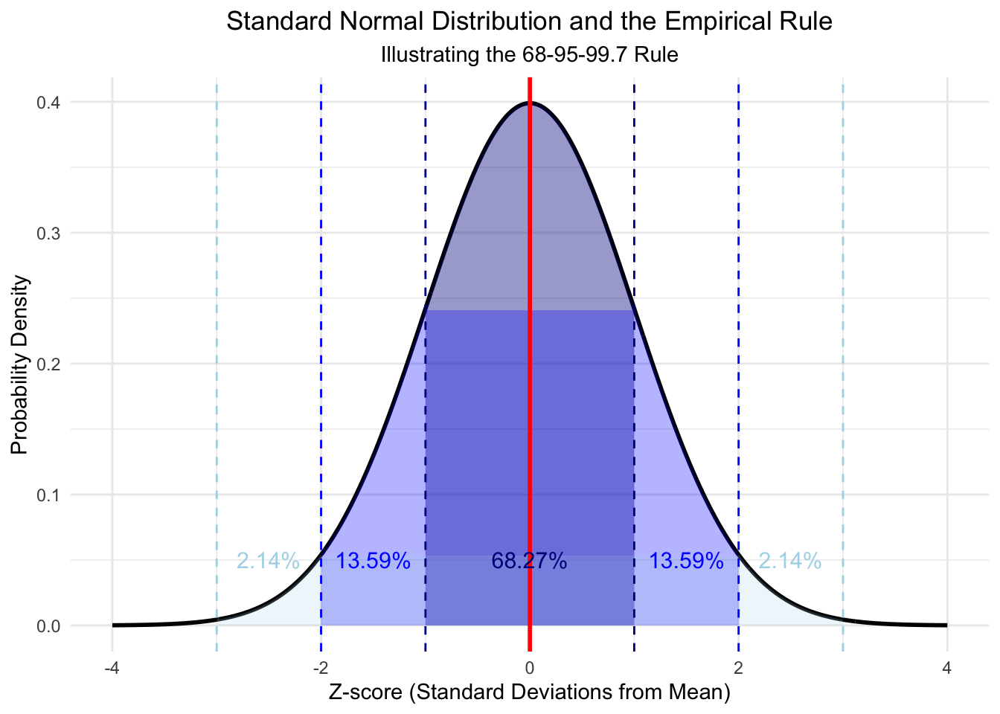

1Introduction to Data Science and Statistics for Social Sciences
This chapter provides a comprehensive introduction to data science and statistics, tailored for students in social sciences. We’ll explore fundamental concepts, the relationship between statistics and data science, and how these fields apply to social research.
1.1 What is Data Science?
Data science is an interdisciplinary field that uses scientific methods, processes, algorithms, and systems to extract knowledge and insights from structured and unstructured data.
Key Point
In social sciences, data science combines statistical methods, computational tools, and domain expertise to analyze complex social phenomena and human behavior.
1.2 The Relationship Between Statistics and Data Science
While statistics and data science are closely related, they have some distinctions:
Focuses on mathematical theories and methods for collecting, analyzing, interpreting, and presenting data
Emphasizes statistical inference, hypothesis testing, and probability theory
Has a long history in social sciences for analyzing survey data, experimental results, and observational studies
Incorporates statistical methods along with computer science and domain expertise
Emphasizes big data, machine learning, and predictive modeling
In social sciences, often deals with large-scale digital traces, social media data, and complex behavioral datasets
Data science can be seen as an evolution and expansion of traditional statistics, incorporating new technologies and methodologies to handle larger and more complex social science datasets.
1.3 Essential Concepts in Data Science and Statistics
1.3.1 Statistical Population, Sample, and Data Generating Process
Understanding the relationships between population, sample, and the data generating process (DGP) is crucial in social science research.
Definitions
Population: The entire group of individuals or objects about which information is sought.
Sample: A subset of the population that is selected for study.
Data Generating Process (DGP): The underlying mechanism or system that produces the observed data.
1.3.1.1 Comparing Population and DGP:
The population represents the group we want to study, while the DGP is the mechanism producing the characteristics we observe in that population.
In social sciences, the DGP often involves complex social, psychological, and economic factors that shape the population’s characteristics.
Understanding the DGP helps us interpret why the population has certain characteristics and how these might change over time or in different contexts.
Example: Voter Behavior Study
Population: All eligible voters in a country
Sample: 1000 randomly selected eligible voters
DGP: The complex interplay of factors influencing voting decisions, such as political beliefs, economic conditions, media exposure, and social networks.
Understanding the DGP helps researchers interpret voter behavior and potentially predict future trends.
Let’s visualize this concept using R:
Click to show/hide R code
library(ggplot2)# Simulate a population based on a simple DGPset.seed(123)age <-rnorm(10000, mean =45, sd =15)income <-exp(rnorm(10000, mean =10, sd =0.5))voting_prob <-plogis(-5+0.05* age +0.00003* income +rnorm(10000, sd =0.5))population <-data.frame(age = age, income = income, voting_prob = voting_prob)# Take a random samplesample_indices <-sample(1:nrow(population), 1000)sample_data <- population[sample_indices, ]# Visualizeggplot(sample_data, aes(x = age, y = income, color = voting_prob)) +geom_point(alpha =0.6) +scale_color_viridis_c() +labs(title ="Sample: Age, Income, and Voting Probability",x ="Age", y ="Income", color ="Voting Probability") +theme_minimal()

This visualization demonstrates how age and income (part of the DGP) influence voting probability in our simulated population, based on the sample we’ve drawn.
1.3.2 Types of Data in Social Sciences
Social science research deals with various types of data:
Quantitative Data: Numerical data (e.g., survey responses, economic indicators)
Qualitative Data: Non-numerical data (e.g., interview transcripts, open-ended survey responses)
Big Data: Large-scale digital traces (e.g., social media posts, online behavior logs)
1.4 Core Components of Data Science in Social Research
Digital data collection (e.g., web scraping, API access)
Ethical considerations in data collection
Cleaning and preprocessing data
Handling missing values and outliers
Coding qualitative data
Data transformation and normalization
Descriptive statistics
Data visualization
Identifying patterns and trends in social phenomena
Hypothesis testing in social research
Regression analysis
Causal inference techniques
Predictive modeling of social behaviors
Text analysis and sentiment analysis
Network analysis in social contexts
Creating effective visualizations for social science data
Communicating research findings to diverse audiences
Data-driven storytelling
1.5 Tools for Data Science in Social Sciences
In this course, we’ll primarily use R for our data analysis, as it’s widely used in social science research.
1.5.1 R for Social Science Data Analysis
R offers powerful capabilities for social science research, from data manipulation to advanced statistical modeling.
Kliknij, aby pokazać/ukryć kod R
library(tidyverse)
── Attaching core tidyverse packages ──────────────────────── tidyverse 2.0.0 ──
✔ dplyr 1.1.4 ✔ readr 2.1.5
✔ forcats 1.0.0 ✔ stringr 1.5.1
✔ lubridate 1.9.3 ✔ tibble 3.2.1
✔ purrr 1.0.2 ✔ tidyr 1.3.1
── Conflicts ────────────────────────────────────────── tidyverse_conflicts() ──
✖ dplyr::filter() masks stats::filter()
✖ dplyr::lag() masks stats::lag()
ℹ Use the conflicted package (<http://conflicted.r-lib.org/>) to force all conflicts to become errors
Kliknij, aby pokazać/ukryć kod R
# Set seed for reproducibilityset.seed(42)# Generate example data with a stronger Simpson's Paradoxn <-1000data <-tibble(age_group =sample(c("Young", "Middle", "Old"), n, replace =TRUE, prob =c(0.3, 0.4, 0.3)),education_years =case_when( age_group =="Young"~rnorm(n, mean =10, sd =1), age_group =="Middle"~rnorm(n, mean =13, sd =1), age_group =="Old"~rnorm(n, mean =16, sd =1) ),income =case_when( age_group =="Young"~70000+1000* education_years +rnorm(n, mean =0, sd =5000), age_group =="Middle"~50000+1000* education_years +rnorm(n, mean =0, sd =5000), age_group =="Old"~30000+1000* education_years +rnorm(n, mean =0, sd =5000) ))# Basic data summarysummary(data)
age_group education_years income
Length:1000 Min. : 6.628 Min. :34068
Class :character 1st Qu.:10.913 1st Qu.:51508
Mode :character Median :13.004 Median :63376
Mean :12.986 Mean :63307
3rd Qu.:14.934 3rd Qu.:75023
Max. :18.861 Max. :96620
education_years income
education_years 1.0000000 -0.8152477
income -0.8152477 1.0000000
Kliknij, aby pokazać/ukryć kod R
# Overall trend (Simpson's Paradox)overall_plot <-ggplot(data, aes(x = education_years, y = income)) +geom_point(alpha =0.5) +geom_smooth(method ="lm", se =FALSE, color ="red") +labs(title ="Overall Relationship between Education and Income",subtitle ="Simpson's Paradox: Appears negative",x ="Years of Education", y ="Income") +theme_minimal()# Trend by age group (Resolving Simpson's Paradox)grouped_plot <-ggplot(data, aes(x = education_years, y = income, color = age_group)) +geom_point(alpha =0.5) +geom_smooth(method ="lm", se =FALSE) +labs(title ="Relationship between Education and Income by Age Group",subtitle ="Resolving Simpson's Paradox: Positive relationship within groups",x ="Years of Education", y ="Income") +theme_minimal()# Statistical analysismodel_overall <-lm(income ~ education_years, data = data)model_by_age <-lm(income ~ education_years + age_group, data = data)# Print resultsprint(overall_plot)
`geom_smooth()` using formula = 'y ~ x'
Kliknij, aby pokazać/ukryć kod R
print(grouped_plot)
`geom_smooth()` using formula = 'y ~ x'
Kliknij, aby pokazać/ukryć kod R
print(summary(model_overall))
Call:
lm(formula = income ~ education_years, data = data)
Residuals:
Min 1Q Median 3Q Max
-24451 -5439 235 5262 34328
Coefficients:
Estimate Std. Error t value Pr(>|t|)
(Intercept) 121814.7 1339.5 90.94 <2e-16 ***
education_years -4505.4 101.3 -44.47 <2e-16 ***
---
Signif. codes: 0 '***' 0.001 '**' 0.01 '*' 0.05 '.' 0.1 ' ' 1
Residual standard error: 7976 on 998 degrees of freedom
Multiple R-squared: 0.6646, Adjusted R-squared: 0.6643
F-statistic: 1978 on 1 and 998 DF, p-value: < 2.2e-16
Kliknij, aby pokazać/ukryć kod R
print(summary(model_by_age))
Call:
lm(formula = income ~ education_years + age_group, data = data)
Residuals:
Min 1Q Median 3Q Max
-14827 -3369 118 3356 16388
Coefficients:
Estimate Std. Error t value Pr(>|t|)
(Intercept) 48270.8 2028.4 23.797 < 2e-16 ***
education_years 1135.5 154.6 7.345 4.26e-13 ***
age_groupOld -19942.8 593.2 -33.619 < 2e-16 ***
age_groupYoung 20461.1 600.7 34.064 < 2e-16 ***
---
Signif. codes: 0 '***' 0.001 '**' 0.01 '*' 0.05 '.' 0.1 ' ' 1
Residual standard error: 4950 on 996 degrees of freedom
Multiple R-squared: 0.8711, Adjusted R-squared: 0.8707
F-statistic: 2244 on 3 and 996 DF, p-value: < 2.2e-16
Kliknij, aby pokazać/ukryć kod R
# Calculate and print correlationsoverall_cor <-cor(data$education_years, data$income)group_cors <- data %>%group_by(age_group) %>%summarize(correlation =cor(education_years, income))print("Overall correlation:")
[1] "Overall correlation:"
Kliknij, aby pokazać/ukryć kod R
print(overall_cor)
[1] -0.8152477
Kliknij, aby pokazać/ukryć kod R
print("Correlations by age group:")
[1] "Correlations by age group:"
Kliknij, aby pokazać/ukryć kod R
print(group_cors)
# A tibble: 3 × 2
age_group correlation
<chr> <dbl>
1 Middle 0.185
2 Old 0.291
3 Young 0.223
This example demonstrates basic data manipulation, summary statistics, and visualization using R, which are common tasks in social science research.
1.6 Models in Science: From Deterministic to Stochastic
In this tutorial, we’ll explore different types of models used in science, ranging from deterministic models often seen in physics to stochastic models common in social sciences and machine learning. We’ll use R to demonstrate some concepts and provide real-world examples.
A model in science is a simplified representation of a complex system or phenomenon. It’s designed to help us understand, explain, and make predictions about the real world. Models can take various forms, including mathematical equations, computer simulations, or conceptual frameworks. They allow scientists to focus on key aspects of a system while ignoring less relevant details, making complex problems more manageable and easier to study.
1.7 1. Deterministic Models
Deterministic models are those where the output is fully determined by the parameter values and the initial conditions. These models are often used in physics and engineering.
1.7.1 Example: Simple Harmonic Motion
A classic example of a deterministic model is simple harmonic motion, described by the equation:
\[x(t) = A \cos(\omega t + \phi)\]
Where: - \(x(t)\) is the position at time \(t\) - \(A\) is the amplitude - \(\omega\) is the angular frequency - \(\phi\) is the phase
Let’s simulate this in R:
# Simple Harmonic Motionsim_harmonic_motion <-function(A, omega, phi, t) { A *cos(omega * t + phi)}# Generate datat <-seq(0, 10, by =0.1)x <-sim_harmonic_motion(A =1, omega =2*pi, phi =0, t = t)# Plotplot(t, x, type ="l", xlab ="Time", ylab ="Position", main ="Simple Harmonic Motion")
This will produce a plot of a simple harmonic oscillation.
1.8 2. Stochastic Models in Social Sciences
Stochastic models incorporate randomness and are often used in social sciences where there’s inherent uncertainty in the systems being studied.
1.8.1 Example: Ordinary Least Squares (OLS) Regression
OLS is a fundamental stochastic model in social sciences. It’s represented as:
\[Y = \beta_0 + \beta_1X + \epsilon\]
Where: - \(Y\) is the dependent variable - \(X\) is the independent variable - \(\beta_0\) and \(\beta_1\) are parameters - \(\epsilon\) is the error term (stochastic component)
Let’s demonstrate OLS in R:
# Generate some sample dataset.seed(123)X <-rnorm(100)Y <-2+3*X +rnorm(100, sd =0.5)# Fit OLS modelmodel <-lm(Y ~ X)# Summary of the modelsummary(model)
Call:
lm(formula = Y ~ X)
Residuals:
Min 1Q Median 3Q Max
-0.95367 -0.34175 -0.04375 0.29032 1.64520
Coefficients:
Estimate Std. Error t value Pr(>|t|)
(Intercept) 1.94860 0.04878 39.95 <2e-16 ***
X 2.97376 0.05344 55.65 <2e-16 ***
---
Signif. codes: 0 '***' 0.001 '**' 0.01 '*' 0.05 '.' 0.1 ' ' 1
Residual standard error: 0.4854 on 98 degrees of freedom
Multiple R-squared: 0.9693, Adjusted R-squared: 0.969
F-statistic: 3097 on 1 and 98 DF, p-value: < 2.2e-16
# Plotplot(X, Y, main ="OLS Regression")abline(model, col ="red")
This will fit an OLS model to some simulated data and plot the results.
1.9 3. Advanced Stochastic Models: Large Language Models
Large Language Models (LLMs) like GPT-3 are complex stochastic models used in natural language processing. While we can’t implement a full LLM in this tutorial, we can discuss its principles.
LLMs are based on the transformer architecture and use self-attention mechanisms. They’re trained on vast amounts of text data and learn to predict the next token in a sequence.
The core of an LLM can be thought of as a conditional probability distribution:
\[P(x_t | x_{<t}, \theta)\]
Where: - \(x_t\) is the current token - \(x_{<t}\) represents all previous tokens - \(\theta\) are the model parameters
Note
Tokens in Large Language Models (LLMs) are the basic units of text that the model processes. They can be thought of as pieces of words or punctuation marks. Here are key points about tokens:
Definition: Tokens are the smallest units of text that an LLM processes. They can be whole words, parts of words, or even individual characters or punctuation marks. Tokenization: The process of breaking text into tokens is called tokenization. LLMs use specific algorithms to perform this task. Examples:
The word “cat” might be a single token. A longer word like “understanding” might be broken into multiple tokens, e.g., “under” and “standing”. Punctuation marks like “.” or “?” are often individual tokens. Common prefixes or suffixes might be their own tokens.
Vocabulary: LLMs have a fixed vocabulary of tokens they recognize. This vocabulary typically ranges from tens of thousands to hundreds of thousands of tokens. Significance: The way text is tokenized can affect how the model understands and generates language. It’s particularly important for handling different languages, rare words, or specialized vocabulary. Context: In the equation for LLMs: \[P(x_t | x_{<t}, \theta)\] Where:
\(x_t\) represents the current token \(x_{<t}\) represents all previous tokens in the sequence \(\theta\) represents the model parameters
Unlike deterministic models, LLMs produce different outputs even for the same input due to their stochastic nature.
1.10 Conclusion
We’ve explored a range of models from deterministic to highly complex stochastic ones. Each type of model has its place in science, depending on the system being studied and the level of uncertainty involved.
Remember, the choice between deterministic and stochastic models often depends on the nature of the system you’re studying and the questions you’re trying to answer. Deterministic models are great for systems with well-understood mechanics, while stochastic models shine when dealing with inherent randomness or complex, not fully understood systems.
1.11 Understanding Spurious Correlations, Confounders, and Colliders
In this tutorial, we’ll explore three important concepts in statistical analysis: spurious correlations, confounders, and colliders. Understanding these concepts is crucial for avoiding misinterpretation of data and drawing incorrect conclusions from statistical analyses.
Let’s start by loading the necessary libraries:
library(tidyverse)library(dagitty)library(ggdag)set.seed(123) # for reproducibility
1.12 Spurious Correlations
Spurious correlations are relationships between variables that appear to be causal but are actually coincidental or caused by an unseen third factor.
1.12.1 Example: Ice Cream Sales and Drowning Incidents
Let’s create a dataset that shows a spurious correlation between ice cream sales and drowning incidents:
n <-100spurious_data <-tibble(temperature =rnorm(n, mean =25, sd =5),ice_cream_sales =100+5* temperature +rnorm(n, sd =10),drowning_incidents =1+0.5* temperature +rnorm(n, sd =2))ggplot(spurious_data, aes(x = ice_cream_sales, y = drowning_incidents)) +geom_point() +geom_smooth(method ="lm", se =FALSE) +labs(title ="Spurious Correlation: Ice Cream Sales vs. Drowning Incidents",x ="Ice Cream Sales", y ="Drowning Incidents")
`geom_smooth()` using formula = 'y ~ x'
This plot shows a positive correlation between ice cream sales and drowning incidents. However, this relationship is spurious. The real cause for both is the temperature:
ggplot(spurious_data, aes(x = temperature)) +geom_point(aes(y = ice_cream_sales), color ="blue") +geom_point(aes(y = drowning_incidents *10), color ="red") +geom_smooth(aes(y = ice_cream_sales), method ="lm", se =FALSE, color ="blue") +geom_smooth(aes(y = drowning_incidents *10), method ="lm", se =FALSE, color ="red") +scale_y_continuous(name ="Ice Cream Sales",sec.axis =sec_axis(~./10, name ="Drowning Incidents") ) +labs(title ="Temperature as the Common Cause",x ="Temperature")
`geom_smooth()` using formula = 'y ~ x'
`geom_smooth()` using formula = 'y ~ x'
1.13 Confounders
A confounder is a variable that influences both the dependent variable and independent variable, causing a spurious association.
1.13.1 Example: Education, Income, and Age
Let’s create a dataset where age confounds the relationship between education and income:
n <-1000confounder_data <-tibble(age =runif(n, 25, 65),education =round(10+0.1* age +rnorm(n, sd =2)),income =20000+1000* education +500* age +rnorm(n, sd =5000))# Without controlling for agemodel_naive <-lm(income ~ education, data = confounder_data)# Controlling for agemodel_adjusted <-lm(income ~ education + age, data = confounder_data)# Visualizeggplot(confounder_data, aes(x = education, y = income, color = age)) +geom_point(alpha =0.5) +geom_smooth(method ="lm", se =FALSE, color ="red") +geom_smooth(aes(group =cut(age, breaks =3)), method ="lm", se =FALSE) +scale_color_viridis_c() +labs(title ="Education vs Income, Confounded by Age",x ="Years of Education", y ="Income")
`geom_smooth()` using formula = 'y ~ x'
`geom_smooth()` using formula = 'y ~ x'
Warning: The following aesthetics were dropped during statistical transformation:
colour.
ℹ This can happen when ggplot fails to infer the correct grouping structure in
the data.
ℹ Did you forget to specify a `group` aesthetic or to convert a numerical
variable into a factor?
The effect of education on income is overestimated when we don’t control for age.
1.14 Colliders
A collider is a variable that is influenced by both the independent variable and the dependent variable. Controlling for a collider can introduce a spurious correlation.
1.14.1 Example: Job Satisfaction, Salary, and Work-Life Balance
Let’s create a dataset where work-life balance is a collider between job satisfaction and salary:
n <-1000collider_data <-tibble(job_satisfaction =rnorm(n),salary =rnorm(n),work_life_balance =-0.5* job_satisfaction -0.5* salary +rnorm(n, sd =0.5))# Without controlling for work-life balancemodel_correct <-lm(salary ~ job_satisfaction, data = collider_data)# Incorrectly controlling for work-life balancemodel_collider <-lm(salary ~ job_satisfaction + work_life_balance, data = collider_data)# Visualizeggplot(collider_data, aes(x = job_satisfaction, y = salary, color = work_life_balance)) +geom_point(alpha =0.5) +geom_smooth(method ="lm", se =FALSE, color ="red") +scale_color_viridis_c() +labs(title ="Job Satisfaction vs Salary, Work-Life Balance as Collider",x ="Job Satisfaction", y ="Salary")
Controlling for the collider (work-life balance) introduces a spurious correlation between job satisfaction and salary.
1.15 Conclusion
Understanding spurious correlations, confounders, and colliders is crucial for proper statistical analysis and causal inference. Always consider the underlying causal structure of your data and be cautious about which variables you control for in your analyses.
1.16 Further Reading
Pearl, J. (2009). Causality: Models, Reasoning, and Inference. Cambridge University Press.
Hernán, M. A., & Robins, J. M. (2020). Causal Inference: What If. Boca Raton: Chapman & Hall/CRC.
1.17 Ethical Considerations in Social Science Data Analysis
Ethics play a crucial role in social science research:
Privacy and Consent: Ensuring participant privacy and informed consent
Data Protection: Securely storing and managing sensitive personal data
Bias and Representation: Addressing sampling bias and ensuring diverse representation
Transparency: Clearly communicating research methods and limitations
Social Impact: Considering the potential societal implications of research findings
Important
Social scientists must carefully consider the ethical implications of their data collection, analysis, and dissemination practices.
1.18 Key Takeaways
Data science in social sciences builds upon traditional statistical methods, incorporating new technologies to analyze complex social phenomena.
Understanding concepts like population, sample, and data generating processes is crucial for valid social science research.
The data science process in social research involves multiple steps from ethical data collection to the communication of insights.
R is a powerful tool for social science data analysis, offering a wide range of capabilities.
Ethical considerations should be at the forefront of any social science data project.
1.19 Next Steps
In the following chapters, we’ll dive deeper into each component of the data science process, exploring statistical concepts, R programming techniques, and real-world applications in social science research.
Practice Exercise
Using the concepts learned in this chapter, design a small-scale study on a social science topic of your choice. Identify the population, consider how you would draw a sample, and reflect on the potential data generating process. What ethical considerations would you need to address?